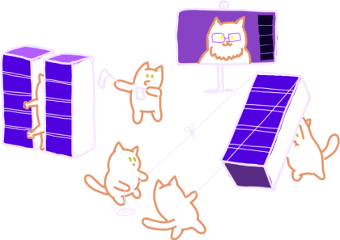
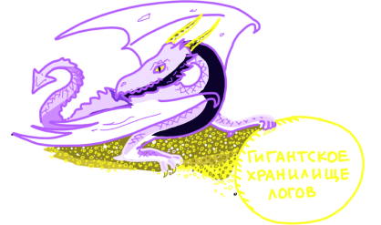
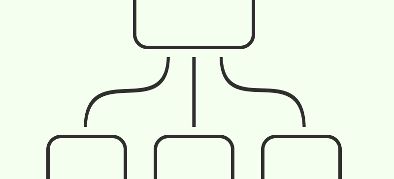
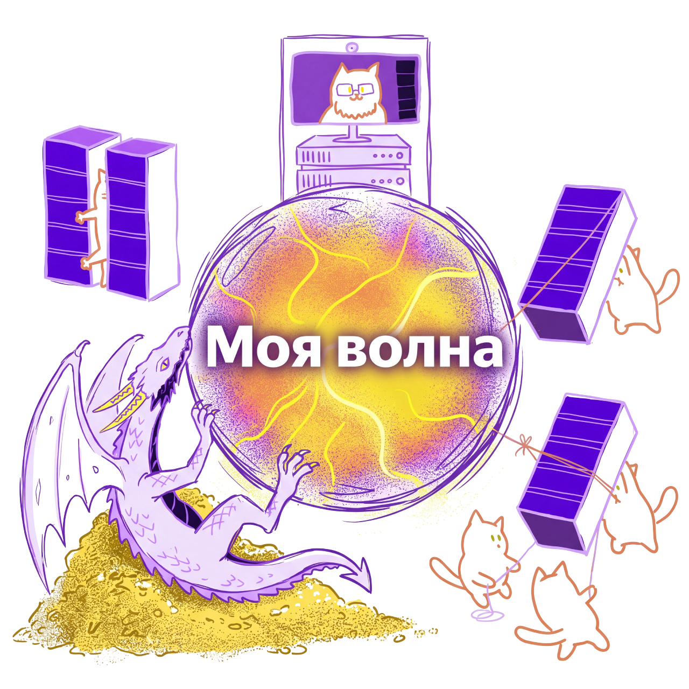
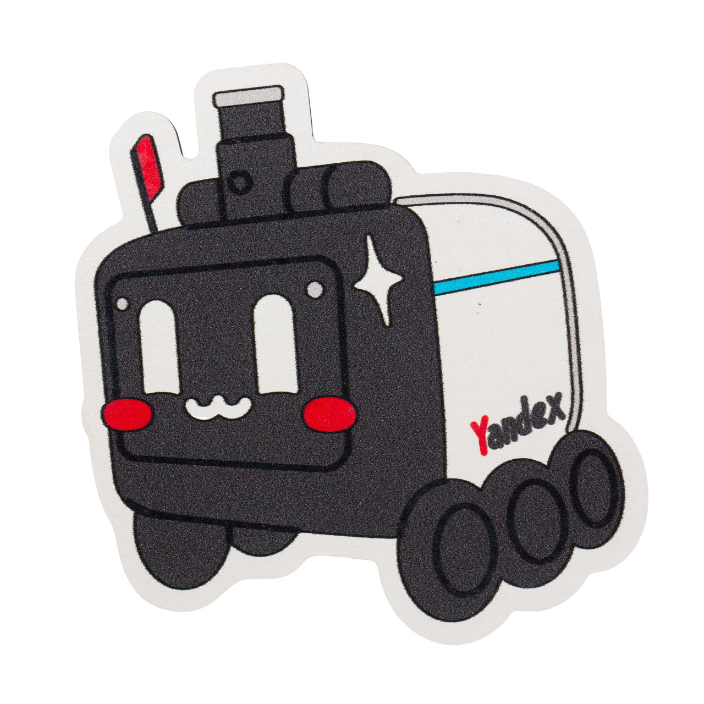

YTsaurusОт хранения эксабайтов до рекомендаций и автономного транспорта
Традиционные реляционные БД рассчитаны на гигабайты. Когда нужно обрабатывать эксабайты данных на десятках тысяч серверов, классическая архитектура перестаёт работать
В 2010 году Яндекс создал собственную распределённую платформу – YTsaurus, чтобы решить эту проблему
В октябре 2026 года беспилотники атаковали три дата-центра Яндекса: в Сасове (Рязанская область), Калуге и Владимире. Работа объектов была полностью остановлена
Это вызвало масштабный сбой: Яндекс Пэй, Такси и другие сервисы оказались недоступны. Инженерам пришлось перестраивать инфраструктуру, восстанавливая сервисы поэтапно – от Алисы и Карт до платежей

За всей внутренней инфраструктурой Яндекса следит команда, которую называют Инфрастракча.
Они строят и обслуживают серверные мощности, сети и дата-центры, на которых работают миллионы устройств по всей стране. Без них не было бы ни Поиска, ни Карт, ни Такси
Их главный принцип. Сейчас вы увидите, как это выглядит изнутри
YTsaurus – это не просто база данных. Это платформа, которая умеет хранить любые типы данных, обрабатывать их с помощью разных движков и масштабироваться до бесконечности
Внутри неё есть всё: от строгих транзакций до обучения нейросетей

Кипарис – это мозг системы. Он хранит метаданные и знает, на каком именно сервере лежит кусочек ваших данных
Это как библиотечный каталог, который работает с миллиардами файлов и никогда не теряет нужную полку

YTsaurus умеет работать с разными языками запросов и фреймворками в зависимости от задачи
В 2023 году Яндекс открыл исходный код YTsaurus (Open Source). Теперь его используют другие компании, а в 2025 году платформа стала коммерческим продуктом
Это огромный вклад в мировую индустрию баз данных
Рекомендации Яндекс Музыки обучаются на миллиардах прослушиваний, которые хранятся в YTsaurus
Нейросеть ARGUS анализирует ваши лайки и пропуски, чтобы подбирать идеальный трек. И даже без интернета «Моя волна» продолжает работать локально


Роботы-доставщики генерируют гигабайты данных с лидаров и камер каждую секунду
Для обучения их нейросетей нужны колоссальные вычислительные мощности. И вся эта обработка происходит внутри YTsaurus
Чтобы беспилотники учились безопасно ездить, им нужно показать миллионы часов видео. Яндекс опубликовал датасет MAD-Cars – 70 тысяч видеозаписей более 150 марок автомобилей
Это база данных, которая позволяет тестировать новые сценарии на дороге, не выезжая на улицу
Кипарис управляет эксабайтами данных и метаданными
Движки CHYT и SPYT обрабатывают данные для ИИ
Музыка, Роверы и Карты работают на этой базе
Доступен всему миру на GitHub
Вопросы?